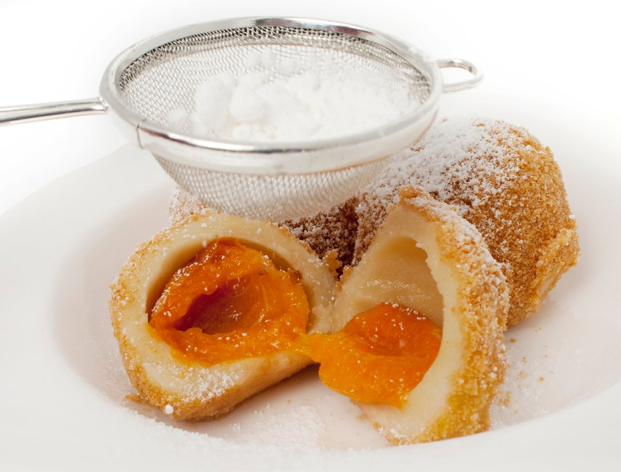

Apricot dumplings
Home

Description
Apricot dumplings can be served as a main dish as well as a dessert. It is highly recommended to sprinkle some sugar and cinammon on top of them as well. Instead of apricots you can use other fruits such as plums, strawberries, apples or pears, or jam and even chocolate for the filling.
Ingredients
- 500 mL water
- 400 g flour
- 1 tbsp oil
- 3 eggs
- 12-15 apricots
Steps
- Bring the water to boiling. Add oil and stir in the flour.
- Knead the dough, make a loaf and leave it to cool.
- Knead in the eggs, if necessary add some more flour.
- Take some dough, flatten it, put the apricot in the middle and form a dumpling.
- Cook the dumplings in boiling lightly salted water for 15 minutes.
- The dumplings can be stored in the freezer.